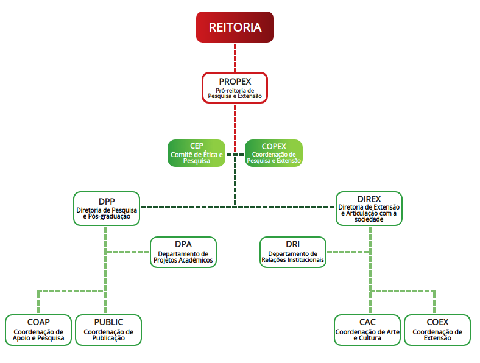

A Pró-reitoria de Pesquisa e Extensão, dirigida por um(a) Pró-reitor(a) nomeado pelo(a) Reitor(a), é um órgão executivo que planeja, coordena, fomenta, acompanha e avalia as atividades e políticas de pesquisa aplicada, pós-graduação, extensão, inovação tecnológica, relações com a sociedade e interação com o processo produtivo, articuladas ao ensino.
PROPEX – Pró-reitoria de Pesquisa e Extensão
Chirlaine Cristine
Gonçalves
E-mail: propex@ifs.edu.br
Tel: (79) 3711-1421
CEP – Comitê de Ética em
Pesquisa
E-mail e telefones disponíveis no link a seguir: Clique aqui
COPEX – Coordenações de
Pesquisa e Extensão dos
Campi
E-mail e telefones disponíveis no link a seguir: Clique aqui